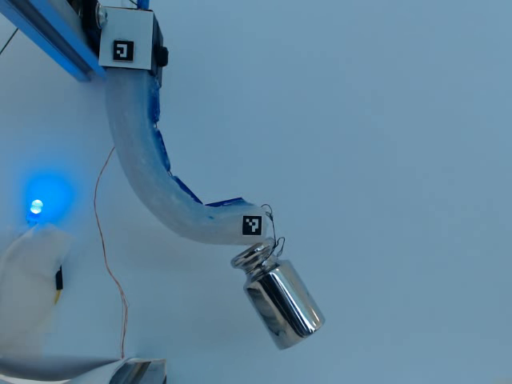
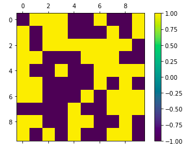

Supervisors: Drs. James Avery, Mark Runciman, Saina Akhond, George Mylonas
The Hamlyn Centre, Imperial College London
This project entailed an extensive literature review in the field of soft robots, control systems, and uses of EIT in robotics. Next, simulations using EIT simulation software EIDORS were done to evaluate optimal placement of electrodes necessary for sensing along the body of the hypothetical robotic actuator. In tandem, multiple iterations of actuators were devised and tested, starting from 3D-printed actuators operated by hydraulics to silicone moulded cable-driven actuation. The latter was retained and outfitted with a sensing chamber filled with saline solution, this being the site of sensor data production.
Mentor: Dr. Jivko Sinapov
Department of Computer Science, Tufts University
Independent work to design, fabricate, and program a 3D-printed cable-driven 5-fingered robotic hand. The hand is then controlled using an Arduino Uno operating as a ROS Serial node, capable of sending/receiving joint commands over a serial connection. This ROS node can be integrated into any ROS-based project where a fingered manipulator is desired. Given more time, this robot hand design and code would have been refined and tested using a UR5 robot arm for simple pick-and-place experiments.
Instructor: Dr. Timothy Atherton
Department of Physics and Astronomy, Tufts University
Completed in a team of three, we developed and implemented a discrete computational model of ferromagnetism initially formulated by Ernst Ising and Wilhelm Lenz. Written in Python (Jupyter Notebook), the work provided shows a simple 2D lattice simulation. Additionally, I built a simple example of a Hopfield network, a computational model representing how neurons learn and store information; a model of biological memory. This network functions in a similar way to the Ising model whereby each individual element in the models have neighbor interaction.
Instructor: Dr. Jivko Sinapov
Department of Computer Science, Tufts University
This project was the final assessment in the COMP 150: Reinforcement Learning (RL) elective. My project group and I developed a learning agent with a Multi-Armed Bandit (MAB) learning scheme to learn the optimal gripper configuration to pick up objects. Time constraints meant we were only able to test our agent on a tennis ball in our experimental setup. In order to enable satisfactory exploration of the action space, we made the probability of choosing exploration very high. To add additional exploration on top of this, we incorporated a mutation function which changes the currently found max value, to exaggerate the difference between the currently chosen best action and others of the same value but different location in the action space.